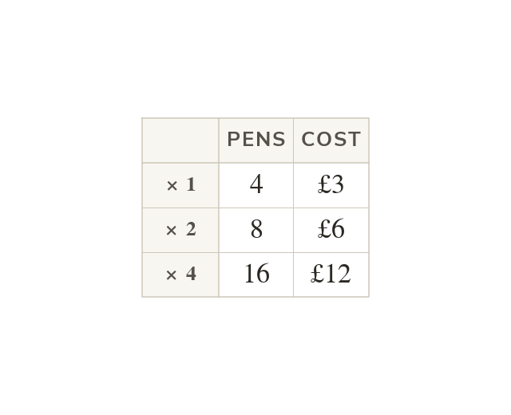

Direct proportion
In direct proportion, doubling one quantity doubles the other. Their ratio stays constant. Here pens cost
Two quantities are in direct proportion when multiplying one multiplies the other by the same factor - their ratio stays constant, so doubling one doubles the other, and halving one halves the other.